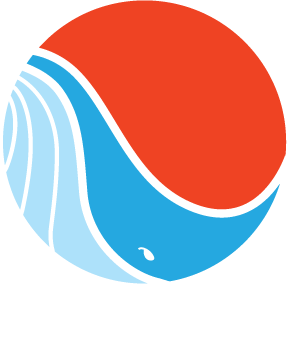

Most people who know me even a little bit, know that I spend most of my free time volunteering in wildlife rescue and rehabilitation. My affinity for helping wild animals stemmed from an interest in marine life, which developed through years of surfing on the east and west coasts of the US. Upon moving to Northern California, my interests expanded with the huge variety in wildlife that surrounds us here every day.
I began as an animal care volunteer at the Marine Mammal Center on Friday nights, working with seals and sea lions, then learned how to rescue pinnipeds and smaller cetaceans through courses offered at the Center. Within a few years, I became a swimmer on the Special Rescue Operations (SRO) team, where I rescued entangled pinnipeds in inaccessible places by sneaking up on them from the water. I’d like to say they never saw us coming, but they always did.
My friends on the SRO team were also members of a whale disentanglement network which responded (legally...in boats, not in speedos) to entangled whales along the northern California coast. The team was comprised of 30 or so trained and experienced volunteers who were on-call 24/7 if an entangled whale was reported. Through trainings, I became a responding member, and began speaking with some of the long-time volunteers about the fact that the organization had no brand, no logo, and most importantly, very little structure in place between the volunteers, and the National Oceanic & Atmospheric Administration (NOAA), who oversaw all operations.
Together we founded California Whale Rescue, and I created a brand identity, printed materials, stationery, and a website with rescue stories, photos, videos and resources for those looking to help. The logo is an abstraction of a baleen whale (those most often entangled off the California coast) against an orange sky, which also resembles the bright buoys we use during responses.
I’m still a responding team member, the Operations Coordinator during responses, and I serve as a volunteer staff member of the organization.